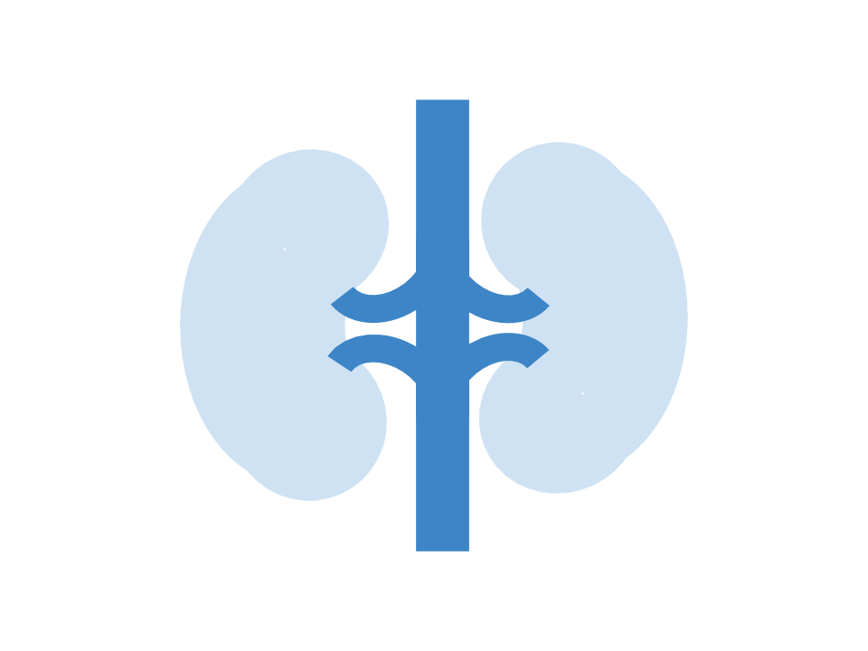

It is no surprise that water is one of the essential things we need to survive. It makes up to 60% of the human body! Each body part has different water concentrations.

Lungs are 83% water
The heart is 73% water

Muscles and kidneys are 79% water
Bones are 31% water
Water helps your body carry out the following body functions:
- Acts as a building material for all of the cells
- Helps regulate internal body temperature
- Transports essential nutrients through the bloodstream
- Lubricates joints
- Acts as a shock absorber for brain, spinal cord, and fetus
Given that water is very important for our bodies, we should be aware of the different types of contaminants that can be found in the drinking water!